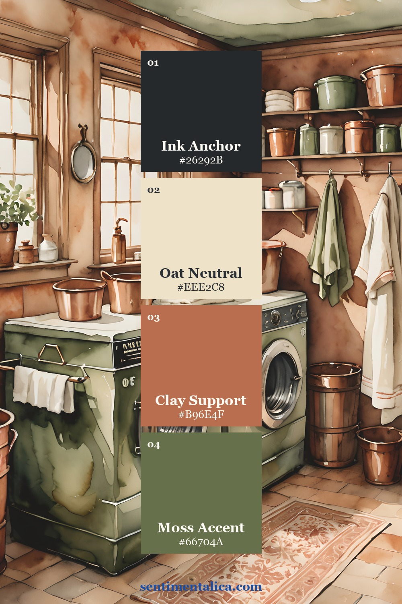
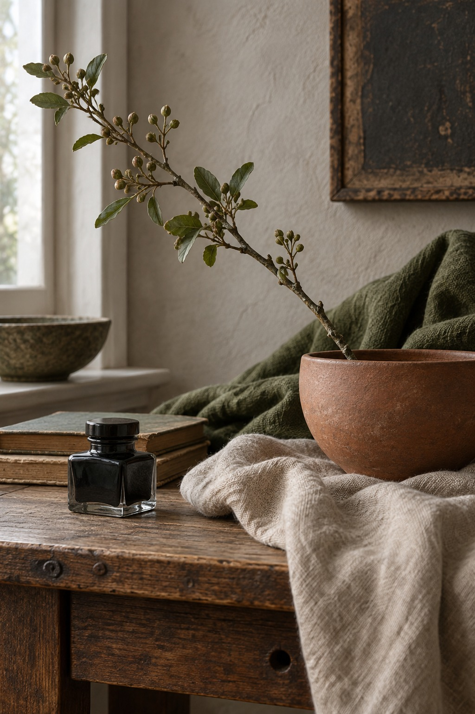

An ink, oat, clay, and moss journal palette feels grounded because it balances one deep anchor with a clean neutral and two earthy middle colors. The combination works for everyday memories, heritage pages, botanical notes, and quiet household stories.

Let oat carry most of the page
Use oat for roughly half to two thirds of the visible area. It can be the page base, journaling card, photograph border, or open margin. Choose a light warm neutral rather than muddy beige; writing and shadow detail should remain easy to see.
Texture keeps the neutral from feeling empty. Linen fibers, faint ledger lines, a deckled edge, or soft printing can add interest without competing with the story.
Use ink to establish structure
Ink is the darkest value, not necessarily literal black. Use it for one title, a narrow frame, a pocket edge, or a repeated line. Two controlled touches are usually enough to hold the layout together.
Keep the darkest shape away from faces and important photograph shadows. If the page feels boxed in, reduce the ink area rather than trying to balance it with more decoration.
Bring warmth with clay
Clay works well in torn paper, a ticket, thread, or a small photograph detail. It should warm the composition without becoming a second anchor. Repeat it once at medium scale and once as a tiny echo.
Want to test the colors before using a favorite image? Choose one picture from the free floral collection and print it in two sizes. The repeated subject makes it easier to judge proportion.

Keep moss as the living accent
Moss connects the palette to leaves, fabric, painted furniture, and outdoor photographs. Use it in less area than clay. A small tab, leaf-shaped fragment, or line beside the date is enough to make the page feel alive.
Try a 60–20–15–5 balance
Begin with about sixty percent oat, twenty percent clay, fifteen percent ink, and five percent moss. Treat these as visual proportions, not measurements. Squint at the loose arrangement: the neutral should dominate, the dark should guide, and the green should appear as one clear signal.
Adapt the palette to the memory
For a bright photograph, enlarge the oat border and keep ink narrow. For a dark indoor picture, let clay provide warmth between the photograph and the page. If the image already contains strong green, reduce the added moss so the color does not repeat mechanically.
Test every paper beside the actual photograph rather than choosing from memory. Screen colors, printed photographs, and dyed fabric can shift under warm indoor bulbs. Daylight reveals whether the oat looks clean, the clay stays warm, and the moss supports rather than dulls the image.
Photograph the loose layout in daylight before gluing. Remove any shade that turns dirty beside the image. Four colors with distinct jobs will usually feel more complete than six colors chosen only because they match.